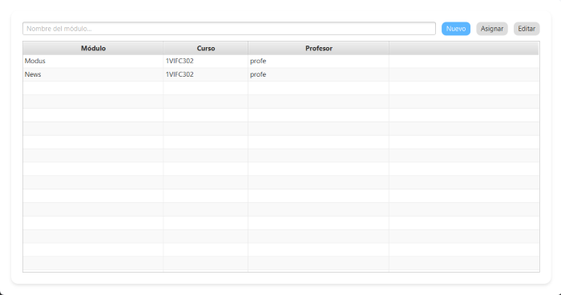

En la pestaña de Cursos se puede asignar a un profesor como coordinador de un curso.

Para crear un módulo simplemente introduce un nombre único para él y selecciona "Nuevo"
Desde "asignar" puedes asignarle el curso al que pertenece y el profesor que lo imparte.
Para crear un RA debes seleccionar "Nuevo", indicar el módulo al que pertenece, su código único y una descripción, luego darle al botón "Guardar"
Volver